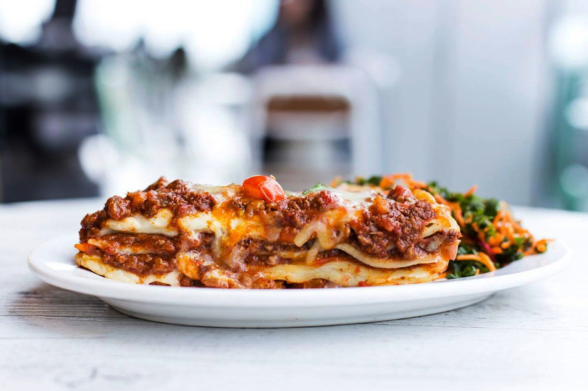

Lasagne

Description
Pasta, Lasagne and Pizza, the trinity of Italy.Most people will likely eat those dishes on the regular and should know how to cook them as close to perfection as possible.
To cook Lasagne, or as one of my friends has put it "Spaghetti-Cake" (don't call it that in Italy if you don't want to get haunted by the ghost of someone's nonna), you need a lot of patience but will be rewarded with one of the tastiest dishes on the planet.So pray that you wont offend Italian ancestors by trying this and let's get to it!
Ingredients
- Ragout Bolognese - the sauce
- 400 g Minced beef
- 150 g Pancetta (slices)
- 60 g Onion
- 60 g Carrot
- 60 g Celery Stick
- 1 glass Red or White wine (get a bottle and drink the rest while cooking)
- 200 g Tomato puree
- 1 tbsp Tomato paste
- 1 glass milk (optional)
- Meat or Vegetable Stock
- 3 tbsp native Olive Oil
- Salt and Pepper
- Sauce Bechamel - the other sauce
- 500 ml Milk
- 50 g unsalted Butter
- 50 g all-purpose flour
- 1/4 tsp Salt
- Freshly grated nutmeg
- White pepper (optional)
- Parmigiano reggiano cheese (optional)
- Lasagne pasta sheets
- Olive Oil to coat the pan
- Mozarella
- Parmigiano reggiano cheese
Steps
- Ragout Bolognese
- In a large casserole, melt the chopped or diced panecetta with the olive oil.
- Slowly saute the finely chopped vegetables over medium heat, stirring constantly with a wooden spoon (be sure not to brown the onion much).
- Increase the heat, add the minced meat and fry, stirring thoroughly, until sizzling, about ten minutes.
- Pour in the wine, let it evaporate completely until it no longer smells of wine.
- Add tomato paste and tomato puree.
-
While stirring constantly, add a cup of boiling broth (or even water) and simmer slowly, covered, for about 2 hours (or 3 hours, depending on preference and meat used), adding hot broth as needed.
Note: the longer you cook it at low heat the tastier it becomes. I had this thing cooking for over 8 hours once and it tasted amazing!
- Halfway through the cooking time, according to tradition, you can add the milk, which must be boil down completely.
- At the end of the cooking time, season with salt and pepper.
- Sauce Bechamel
- In a casserole, melt the butter over low heat.
- Slowly add the flour, stirring with a wooden spoon. This mixture is called Roux
- Let the mixture brown carefully watching not to burn it.
- Meanwhile heat the milk.
- Add the milk slowly to the roux, stirring vigorously with a whisk to prevent lumps from forming.
- Turn up the heat to medium. While stirring constantly let the sauce thicken up.
- Add salt, nutmeg and optionally pepper and Parmigiano reggiano to the sauce.
- Coat a casserole with the olive oil and add the first layer of Ragout.
- Cover with lasagne pasta sheets and add a layer Ragout and Sauce Bechamel.
- Repeat the last step until you run out of sauce or room in your casserole.
- Add a generous amount of Mozzarella and Parmegiano reggiano cheese on top.
- Bake in the oven at 180 degrees C (350 degree F) until golden brown.
Back to main-page